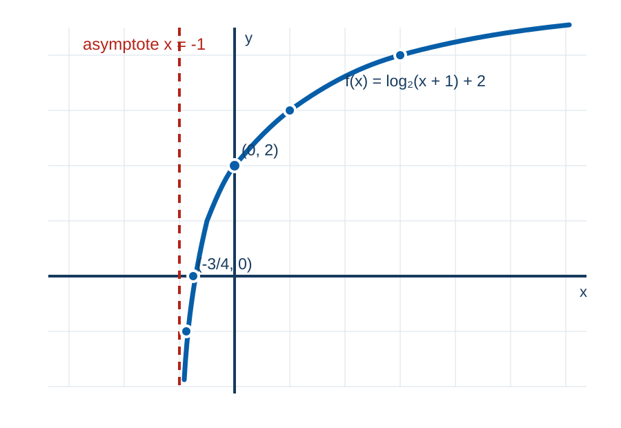

MATH 130 · Section 4.3
Logarithmic Functions
Inverse relationships, graphs, equations, and applications
55 minutes · Offline capable
Today’s Learning Roadmap
- 1
convert between logarithmic and exponential forms
- 2
evaluate and simplify logarithmic expressions
- 3
graph logarithmic functions and determine their domains
- 4
solve logarithmic and exponential equations using inverse properties
Activate · 0.5 minSource: 2
Predict: convert between logarithmic and exponential forms
Predict firstIf $2^5=32$, what question is $\log_2(32)$ answering?
Commit to a response before discussion.
Activate · 1.0 minSource: Authored
Model the Skill: convert between logarithmic and exponential forms
1$\log_4(64)=3$ means $4^3=64$.
2$4^{-3}=1/64$ means $\log_4(1/64)=-3$.
3The base remains 4 and the logarithm records the exponent.
Model · 3.0 minSource: 5
You Try: convert between logarithmic and exponential forms
Student practiceRewrite $5^3=125$, $3^{-2}=1/9$, and $\ln(7)=x$ in the opposite form.
Practice · 3.0 minSource: 6
Check and Diagnose: convert between logarithmic and exponential forms
Error analysis- Keep the base unchanged.
- The log argument becomes the exponential result.
Self-checkWhat evidence confirms the setup, sign, unit, or magnitude?
Feedback · 2.0 minSource: 7
Pacing checkpointMake It Stick: convert between logarithmic and exponential forms
Complete the sentence: a logarithm tells us ____.
Exit responseAnswer in complete mathematical sentences and identify one remaining question.
Synthesize · 0.5 minSource: 8
Predict: evaluate and simplify logarithmic expressions
Predict firstWithout a calculator, evaluate $\log_2(32)$ and $\ln(1)$.
Commit to a response before discussion.
Activate · 1.0 minSource: Authored
Model the Skill: evaluate and simplify logarithmic expressions
1$\log(250)\approx2.398$, and $10^{2.398}\approx250$.
2$\ln(40)\approx3.689$, and $e^{3.689}\approx40$.
3The inverse checks confirm both calculator entries.
Model · 3.0 minSource: 11
You Try: evaluate and simplify logarithmic expressions
Student practiceSimplify $\log_7(1)$, $\ln(e^{-5/2})$, and $e^{\ln 7}$.
Feedback and solution$0$, $-5/2$, and $7$.
Practice · 3.0 minSource: 12, 13
Check and Diagnose: evaluate and simplify logarithmic expressions
Error analysis- A logarithm of a number between 0 and 1 is negative when the base exceeds 1.
- Logs undo exponents only when bases match.
Self-checkWhat evidence confirms the setup, sign, unit, or magnitude?
Feedback · 2.0 minSource: 14
Pacing checkpointMake It Stick: evaluate and simplify logarithmic expressions
Name two inverse identities involving logarithms and exponents.
Exit responseAnswer in complete mathematical sentences and identify one remaining question.
Synthesize · 0.5 minSource: 15
Predict: graph logarithmic functions and determine their domains
Predict firstWhat feature of an exponential graph becomes the vertical asymptote of its inverse?
Commit to a response before discussion.
Activate · 1.0 minSource: Authored
graph logarithmic functions and determine their domains
Concept- Logarithmic graphs reflect exponential graphs across $y=x$.
- For $f(x)=\log_b(g(x))$, require $g(x)>0$.
Explain · 2.5 minSource: 16
Model the Skill: graph logarithmic functions and determine their domains
Annotated diagram- Transform $y=\log_2(x)$ into $f(x)=\log_2(x+1)+2$.
- Shift the parent graph left 1 and up 2.
- Domain: $(-1,\infty)$; vertical asymptote: $x=-1$.
- Intercepts: $(0,2)$ and $(-3/4,0)$.

Graph of f of x equals log base 2 of x plus 1, plus 2, with vertical asymptote x equals negative 1 and labeled interceptsModel · 3.0 minSource: 17
You Try: graph logarithmic functions and determine their domains
Student practiceFind the domain and vertical asymptote of $\log(3x-6)$.
Feedback and solution- Require $3x-6>0$, so $x>2$.
- Domain: $(2,\infty)$; asymptote: $x=2$.
Practice · 3.0 minSource: 18
Check and Diagnose: graph logarithmic functions and determine their domains
Error analysis- The logarithm argument must be strictly positive, not merely nonnegative.
- Horizontal shifts move the vertical asymptote.
Self-checkWhat evidence confirms the setup, sign, unit, or magnitude?
Feedback · 2.0 minSource: 19
Pacing checkpointMake It Stick: graph logarithmic functions and determine their domains
Explain how to find a logarithmic domain before graphing.
Exit responseAnswer in complete mathematical sentences and identify one remaining question.
Synthesize · 0.5 minSource: 20
Predict: solve logarithmic and exponential equations using inverse properties
Predict firstWhen should you convert to exponential form, and when should you take a logarithm?
Commit to a response before discussion.
Activate · 1.0 minSource: Authored
Model the Skill: solve logarithmic and exponential equations using inverse properties
1$x-5=2^4=16$, so $x=21$; the argument $16$ is positive.
2$\log_4(25)=\ln(25)/\ln(4)\approx2.322$.
3Substitution and exponentiation verify both results.
Model · 3.0 minSource: 23, 24
You Try: solve logarithmic and exponential equations using inverse properties
Student practiceSolve $3^x=175$ and evaluate $\log_3(50)$.
Feedback and solution- $x=\log(175)/\log(3)\approx4.701$.
- $\log_3(50)\approx3.561$.
Practice · 3.0 minSource: 25
Check and Diagnose: solve logarithmic and exponential equations using inverse properties
Error analysis- Reject solutions that make a log argument nonpositive.
- The log of a sum is not the sum of logs.
Self-checkWhat evidence confirms the setup, sign, unit, or magnitude?
Feedback · 2.0 minSource: 26, 27
Pacing checkpointMake It Stick: solve logarithmic and exponential equations using inverse properties
Write a two-step checklist for solving and checking a logarithmic equation.
Exit responseAnswer in complete mathematical sentences and identify one remaining question.
Synthesize · 0.5 minSource: 28
Session Summary and Exit Ticket
- State the most important idea from today without looking at your notes.
- Complete one representative setup and identify the step most likely to cause an error.
- Write one question that should be answered before the next assessment.
Exit responseAnswer in complete mathematical sentences and identify one remaining question.
Feedback and solutionUse the objective roadmap to identify any skill that still needs deliberate practice.
Synthesize · 1.5 minSource: 29, 30, 31